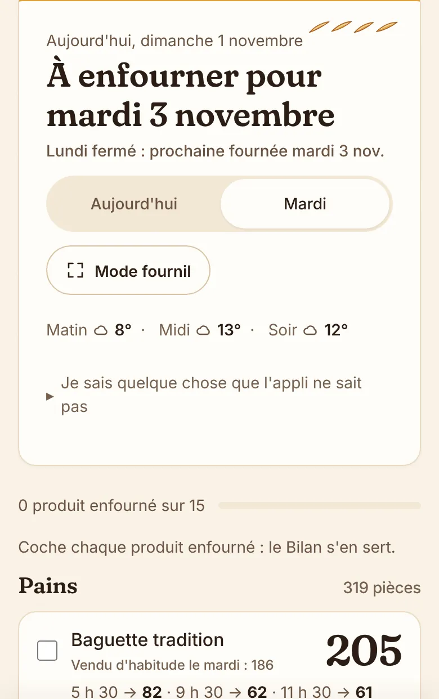
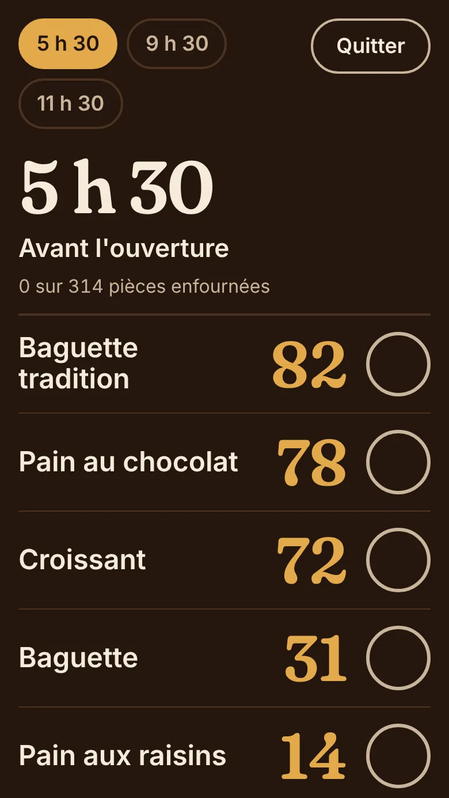
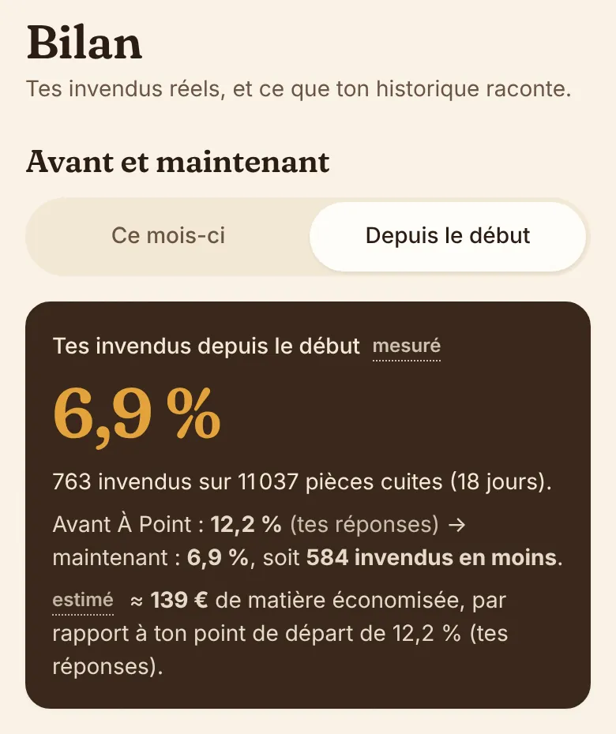
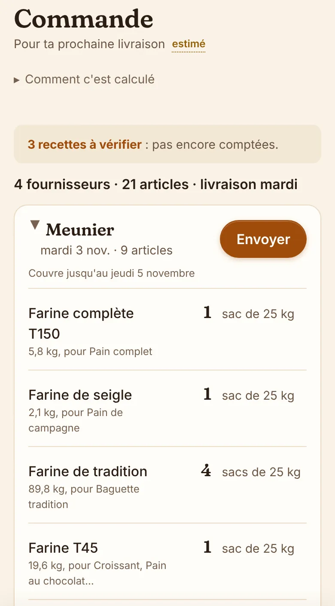

Pour les boulangeries indépendantes
La fournée de demain, comptée sur vos ventes.
Chaque soir, À Point reprend ce que vous avez vendu les mêmes jours des semaines passées, regarde la météo, les fériés et les vacances, et vous donne une quantité par produit, répartie par fournée. Vous gardez le dernier mot.
Gratuit pendant la phase de test, sans carte bancaire. Sur le téléphone, rien à installer.

Ce que coûtent dix pièces jetées par jour
0,20 €, c'est un ordre de grandeur de la matière d'une baguette ou d'un croissant. C'est un exemple de calcul, pas un résultat client. Vos chiffres à vous s'affichent dans le Bilan : ce que vous avez cuit, moins ce que vous avez vendu, comparé à vos invendus d'avant. Les ventes rattrapées sur les ruptures n'y sont pas comptées, parce qu'on ne sait pas les mesurer.
Une journée avec À Point
-
Le soir
Les ventes du jour arrivent.
Depuis votre caisse, par un fichier d'export, ou en comptant ce qui reste sur les étagères : À Point en déduit ce qui est parti. Avec une caisse branchée, vous n'avez rien à faire.
-
Dans la nuit
La fournée se calcule.
Pour chaque produit, il part de vos ventes des mêmes jours de la semaine, donne plus de poids aux dernières, écarte les journées hors norme. Un pont, la rentrée, une semaine de pluie : il en tient compte.
-
Au fournil
Vous enfournez.
Un chiffre par produit, rangé par rayon et réparti sur vos fournées. Le mode fournil l'affiche en très gros, lisible les mains dans la farine. Un marché sur la place ? « Plus de monde » relève tout d'un coup.
Les écrans, tels quels
Pas de maquette : ce sont des captures de l'appli sur téléphone, prises sur le compte de démonstration « Le petit comptoire ». Les chiffres sont ceux de la démo.



Et l'onglet Semaine : les sept jours qui viennent, avec les jours chargés, les fériés et vos jours de fermeture.
Votre caisse
Le mieux, c'est que les ventes arrivent seules chaque nuit. Voici où en est chaque caisse aujourd'hui.
- Hiboutik
- Vous collez votre clé une fois, les ventes arrivent chaque nuit.
- Prêt
- SumUp, Zettle, Square, Loyverse, Tactill, Zelty, Popina
- Vous créez une clé dans votre compte de caisse (cinq minutes, on vous montre où cliquer) et vous la collez. Vos douze derniers mois arrivent d'un coup, puis chaque nuit. C'est nouveau : nous le vérifions avec nos premières boulangeries.
- Disponible
- Bimedia, Crisalid, Toporder, Lightspeed, Cashmag…
- Vous importez le fichier d'export, les colonnes sont reconnues seules. Bientôt, la caisse l'enverra d'elle-même chaque jour à votre adresse d'import.
- Import prêt envoi automatique bientôt
- Toutes les autres
- Le fichier d'export de vos ventes, en CSV ou Excel. Vos mois passés servent dès le premier jour.
- Prêt
- Pas de caisse
- Le soir, vous comptez ce qui reste. Cuit moins reste, ça fait les ventes. Moins d'une minute.
- Prêt
Pourquoi À Point
Dans beaucoup de boulangeries, la fournée se décide de tête, la veille, avec l'habitude et un coup d'œil au ciel. Ça marche, jusqu'au soir où il reste trente baguettes sur l'étagère, ou au matin où il n'y a plus de croissants à dix heures.
J'ai voulu un outil qui fasse ce calcul à partir des vraies ventes de la boutique, qui dise d'où vient chaque chiffre, et qui laisse le boulanger trancher. À Point est conçu avec des boulangeries indépendantes, et pour elles. Il est en phase de test, et gratuit tant qu'elle dure.
Si quelque chose ne colle pas à votre façon de travailler, dites-le depuis la page Aide. C'est comme ça que l'outil avance.
Nilsfondateur d'À Point
Gratuit pendant la phase de test
Toute l'application : Fournée, Commande, Semaine et Bilan, le branchement de la caisse ou l'import de fichier, et les réponses à vos questions. Pas de carte bancaire, donc rien à résilier.
Si un abonnement arrive un jour, il sera annoncé à l'avance et jamais activé sans votre accord. Vos données restent à vous : vous pouvez les récupérer ou les faire supprimer quand vous voulez. Les conditions d'utilisation.
Créer mon compteQuestions
Est-ce qu'À Point décide à ma place ?
Non. Il donne un chiffre et explique d'où il vient (« Pourquoi ? » sous chaque produit). Vous savez des choses qu'il ignore : une commande pour un mariage, un chantier dans la rue. Le dernier mot est le vôtre.
Combien d'historique faut-il ?
Au moins 4 mêmes jours de semaine pour un produit (4 samedis, par exemple). Avant, la Fournée écrit « Pas assez d'historique » plutôt qu'un chiffre inventé. Avec un export ou une caisse branchée, vos mois passés arrivent d'un coup et la prévision sert dès le premier jour.
Je n'ai pas de caisse branchable. Je peux quand même ?
Oui. Le soir, vous comptez ce qui reste sur les étagères : À Point déduit les ventes (cuit moins reste). Vous pouvez aussi importer un fichier de ventes à tout moment.
Et un jour qui sort de l'ordinaire ?
Fériés, ponts, vacances scolaires et météo sont déjà pris en compte. Pour le reste (un marché, une fête, des travaux), « Plus de monde » et « Moins de monde » ajustent toute la fournée.
Faut-il remplir des fiches techniques ?
Non. Pour les produits courants, une recette type sert à calculer la commande. Elle est marquée « à vérifier » et ne compte qu'une fois que vous l'avez validée ou corrigée.
Comment est calculé ce que j'économise ?
On compare vos invendus d'avant à ceux d'aujourd'hui. Ceux d'aujourd'hui sont mesurés : ce que vous avez enfourné moins ce que vous avez vendu. Ceux d'avant viennent de vos réponses à l'inscription, sinon d'une moyenne nationale, signalée comme une estimation. Chaque pièce évitée vaut son coût de matière. Le détail est dans le Bilan.
Qui voit mes ventes ?
Vous seul. Vos données sont hébergées dans l'Union européenne, ne sont ni revendues ni montrées à d'autres boulangeries. Voir la politique de confidentialité.
Comment j'arrête ?
Vous arrêtez de l'ouvrir, tout simplement : il n'y a rien à résilier. Pour que vos données soient supprimées, un message depuis la page Aide suffit.
Essayez-le sur la fournée de demain.
Créez votre compte, branchez votre caisse ou déposez un export, et comparez son chiffre au vôtre.